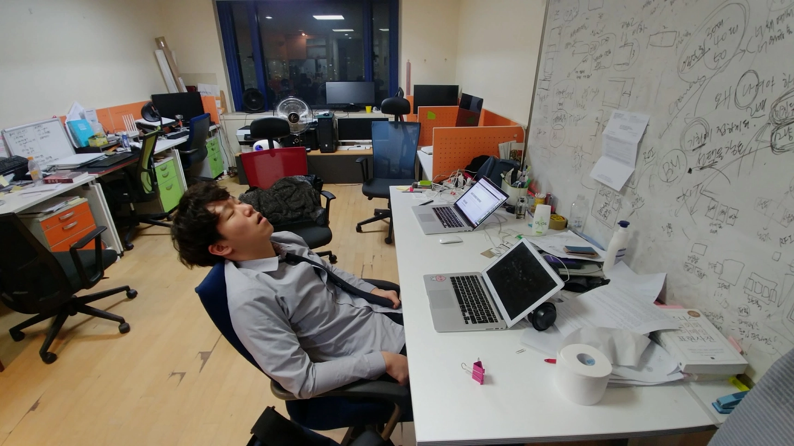

위험! 경고!
제가
나이가 어리고 정규 교육과정을 거치지 못한 관계로
편협하고 비상식적인
생각이나 글이 있습니다. 만약 제 글이나 생각에 불편함을
느끼시거나 반박할 의견이 있으시다면, 주저하지 마시고
댓글이나 이메일로 지적해 주세요. 제가 이를 배움의 기회로
삼아
잘못된 생각을 바꾸는 계기로 삼겠습니다.
또한, 건강한 방향에서 발전적인 토론을 좋아하신다면, 이
글의 하단에 서로 의견을 나누는 공간을 마련하겠습니다. 저와
같은 환경에서 개발자를 목표로 하는 고등학생, 대학생, 신입
개발자들에게 이것이 큰 힘이 될 것입니다.
꿈이 개발자
대학교에 들어갈 성적도 되지 않았고, 공부에 관심도 없었습니다. 하지만 저는 멋진 개발자가 되고 싶었습니다. 제가 생각하는 개발자는 세상을 구하는 영웅 같은 캐릭터였습니다. 사람들에게 가치를 주고, 큰 돈도 버는 모습이 너무 멋져 보였습니다. 저도 저렇게 되고 싶었습니다.
개발자 취업 관련 글을 다 읽었습니다.
OKKY의 취업 관련 글을 통해 대부분의 분들이 공부를 해서 대학에 먼저 가라고 조언하시더군요. 그러나 제가 따라야 할 순서의 첫 단계부터 저에게는 자격이 없었습니다. 고등학교 성적이 바닥이었기 때문에, 첫 번째 스펙조차 만들 수 없었습니다.
또한, 집안 형편이 너무 어려워 국비 학원조차 제게는 사치였습니다. 집에는 돈이 없었고, 저는 능력이 없었습니다. 게다가 제가 시도해 볼 수 있는 방법이 하나도 없었습니다.

1교시 후 조퇴
제가 가진 것은 시간이었고, 할 수 있는 것은 인터넷 검색을 통해 코딩을 배우는 것뿐이었습니다. 그러나 혼자서 코딩을 독학하다 보니 시행착오를 많이 겪었습니다. 이해하거나 습득하는 데 까지 많은 시간이 필요했고, "시간이 부족하면 아무것도 이해할 수 없겠구나"라는 생각이 들었습니다. 그래서 잠자는 시간을 제외하고는 모든 시간을 코딩에 할애하기 시작했습니다.
고등학교 교장 선생님께 찾아가 1교시 수업이 끝난 후 조퇴하겠다고 말씀드렸습니다. 교장 선생님은 조퇴의 이유를 물으셨고, 저는 스타트업에서 코딩을 하러 가야 한다고 답했습니다. 그 결과 고등학교 3학년 때에는 아침 10시부터 밤 10시까지 코딩에 몰두하게 되었습니다. 학교 성적은 낮았지만, 코딩 실력은 점차 향상되었습니다.
자연스럽게 1인 개발
고등학교 내에서도 저는 혼자였습니다. 프로그램 동아리 친구들은 C로 게임을 만들고 있었지만 저만 홀로 Java Script로 독학으로 웹 개발을 했었기 때문입니다. 지금도 그렇지만 그때는 Java Script가 더 좋지 않은 언어로 치부했던 경향이 있었습니다. 프로그래머라면 당연히 C부터 공부해야지. 뭐 이런 식이였는데요 그때 친구들은 지금 거의 개발을 하지 않고 있는 것 같습니다. 아마 흥미를 잃어버린 탓이 아닐까 생각해 봅니다.
웹 서비스 개발에 큰 관심이 있어 JavaScript를 공부하기 시작했습니다. JavaScript로 프론트엔드와 백엔드 모두를 개발할 수 있다는 점이 매력적이었습니다. 또한, 주변에 함께 개발할 사람이 없어서 결국 프론트엔드와 백엔드 개발을 혼자서 맡게 되었습니다.
1인 프로젝트 13개
처음에는 고등학교 친구를 위한 커뮤니티 사이트를 만들었고 OX 퀴즈 웹 게임을 개발 했습니다. 그 뒤에 웨드프레스용 웹 에디터를 개발 했으며 웹 디자이너와 함께 Cafe24 Appstore용 앱을 개발 했습니다. Shopify app Retargeting in Store, Super Social Proof 2종 개발 했으며 Github 프로필 정보를 보여주는 앱과 개발자용 이력서 서비스 , 웹 디자이너용 포트폴리오용 서비스, IT 전문직용 이력서 서비스, AI 모의 면접 서비스, AI 통합 이력서 서비스를 개발해 오고 있습니다.
개발 독학
개발자 독학의 장점
사실 대부분 개발자는 독학을 경험해 보지 못하거든요. IT 기업이나 스타트업의 C 레벨에 계신 분들은 최고 수준의 대학과 전문 네트워킹을 통해서 성장 해 오신 분들입니다. 그분들이 생각하는 좋은 개발자는 인 서울, 컴공 4년제 졸업, 부트캠프, 뭐 이런 빌드업을 통해야 한다는 생각을 하고 계시거든요. 그래서 이런 기업에 지원하는 독학 개발자는 서류전형에서 탈락 처리됩니다. 리더와의 공감대가 없으며 팀 구성원과의 수준, 개발 문화와 맞지 않기 때문이죠.
그러나 극초기 스타트업이나 CTO가 유연하고 개방적인 사고방식을 가진 스타트업에서는 좋아할 수 있습니다. 스스로 알아서 일을 처리하는 능력이나 고객 중심으로 생각하며 스스로 학습하는 것, 팀의 동기부여 같은 것에 도움이 되기 때문입니다.
현실적인 독학 방법
채용 담당자 입장에서 볼때 독학을 했다는 것은 신뢰하기 어렵지만 이미 개발되어 고객이 있는 서비스는 믿을 수 밖에 없습니다. 그래서 독학의 목표는 상용 서비스가 되어야 하고 취업의 시점에 반드시 서비스가 작동하고 있어야 합니다.
넓은 범위의 서비스가 아니라 좁고 깊은 기능 구현에 집중합니다. 만들려고 하는 목표에 관해서 깊이 탐구하고 이해하지 못하면 넓은 서비스로 설계를 바꾸게 되는데요, 이게 좋지 않은 선택입니다. 굉장히 부실해져서 전혀 매력적이지 않거든요. 이렇게 좁고 깊은 아이템을 구현하면 채용 담당자는 그것에 대해서 기술적인 궁금증과 기획의도와 사용자 피드백 모두에 관심이 생기게 되는 거죠.
아이템을 선정하는 방법
가장 추천해 드리는 포트폴리오 아이템은(시간이 걸리겠지만) 입사하고 싶은 스타트업의 아이템을 상용 서비스 수준까지 깊이 파고들어 개발하는 것입니다. 예를 들면 구인, 구직 서비스에 입사하려면 잡 보드나 이력서 서비스를 개발하는 것입니다. 생각해 보면 평생 독학을 해야 하는 것이 개발자이거든요. 이것이 독학을 잘 할수 있는 방법을 알고 있어야 하는 이유입니다.
코딩 테스트와 과제
처음으로 코딩 테스트와 과제를 경험해 보았습니다. 그 경험을 통해 코딩 테스트나 과제를 통한 평가 방식을 채택하는 스타트업에는 지원하지 않기로 결정했습니다. 저는 저의 역량을 더 정확하게 평가받기 위해서, 제가 1인 개발로 완성한 상용 프로젝트의 코드를 직접 보여드리는 것을 제안했습니다. 이 방법이 저의 실력을 더욱 정확하게 파악할 수 있는 기준이 될 것이라고 생각했었습니다.

그리고 제가 1인 개발한 서비스의 라이브 서버를 열어서 설계, 구조, 실제 코딩 수준, QA 방법, 리팩토링등에 대해서 보실 수 있도록 하겠다고 말씀 드렸습니다. 그리고 이것은 코딩 테스트나 과제 보다 더 정확하게 잘못된 채용을 피할수 있는 방법이라고 말씀을 드렸습니다.
하지만, 실제로 라이브 서버를 열어 제 개발 역량을 설명한 적은 한 번도 없었습니다. 생각해 보면 코딩 테스트를 주장하는 회사 측에서는 저의 개발 역량에 관심이 없었던 것 같습니다. 코딩 테스트는 뽑지 말아야 할 사람을 걸러내는 거지 뽑아야 할 사람을 찾는 과정이 아니라고 생각하거든요. 무엇보다 코딩 테스트 통과했으니까 연봉 얼마 달라 이게 말이 안 되잖아요?
CTO가 충분히 신입 개발자와 주니어 개발자의 개발 역량을 평가할 수 있다고 생각합니다. 그래서 "하기 싫어서 하지 않는다"로 조심스럽게 생각해 봅니다. 이상한 선례를 남길 수 없다, 너만 특별히 대우할 수 없다, 나는 공정한 프로세스를 준수한다. 그래서 너도 이 프로세스를 따라야 한다, 뭐 이런 게 아닐까 조심스럽게 생각해봅니다.
관점 바꿔 생각하기
구직자의 관점
고등학교와 대학교는 학문적 접근을 합니다. 비전공자도 뛰어난 개발자가 될 수 있으며, 심지어 고등학교를 졸업하고 취업하는 경우도 많습니다. 제 생각에 이는 IT 기업이 빠르게 발전함에 따라 대학이 그 필요조건을 충족시키지 못하기 때문입니다. 고등학교나 대학교에서 현재 IT 기업이 요구하는 기술 스택을 가르치지 않기 때문입니다.
이런 IT 기업의 현실을 잘 아는 개발자들은 높은 연봉을 주는 스타트업에 존재하므로, 대학교나 고등학교에 현실적인 정보가 흘러들어가지 않습니다. 교육자들과 IT 기업 개발자 사이의 간극이 크게 벌어져 있습니다. 게다가 SI 회사, 솔루션 회사, 웹에이전시 회사, 인력 소싱 회사, IT 대기업 계열사, IT 스타트업, IT 서비스 회사, IT 리더 기업, IT 컨설팅 회사 등 IT 기업의 특성이 다양합니다.
따라서 많은 취업 정보가 '이것도 해야 한다, 저것도 해야 한다, 모두 다 해야 한다'는 식으로 제시됩니다. 이는 큰 IT 기업이 원하는 육각형 인재이기 때문에 어느 정도 맞습니다. 최고의 인재는 보통 최상위 학력에서 나오는 것으로 여겨지며, 특히 기술 중심의 회사는 최상위 1%의 인재를 찾습니다.
그러나 저를 포함한 대부분의 구직자들은 상위 1%에 속하지 않습니다.
구인자의 관점
작은 스타트업은 MVP(최소 기능 제품)와 PMF(제품 시장 적합성) 단계에서 개발자를 많이 채용합니다. 그들은 짧은 시간 내에 빠르게 구현해야 하기 때문에 최신 기술을 도입하려 하며, 다양한 문제를 해결할 수 있는 구직자를 찾습니다. 개발 팀 구성이 부족하거나 한두 명일 수 있으며, 모든 구성원이 바쁘고 힘든 상황입니다.
투자를 받기 위한 입장에서 스타트업은 즉시 전력이 될 수 있는 개발자를 필요로 합니다. 즉, 현재 회사에서 사용하는 기술 스택으로 현재 회사가 만들고 있는 서비스를 만들 수 있어야 합니다. 극단적으로 보면, 사수 없이도 결과물을 만들 수 있는 개발자를 찾습니다.
CEO와 CTO는 인재 찾기를 투자 유치 다음으로 중요한 우선순위로 둡니다. 스타트업 내에서 가장 많은 SNS 활동을 하며 많은 개발자와의 연결을 시도합니다. 결정권자의 시간은 항상 부족하며 바쁩니다. 적합한 인재가 나타나면 최대한 빠르게 결정하는데, 이는 채용 과정이 길어지면 다른 스타트업에 인재를 빼앗길 수 있기 때문입니다.
채용의 관점
구직자가 고등학교, 대학교를 통해서 열심히 공부해 온 것은 비교적 스타트업에 필요하지 않은 지식이고 스타트업은 구직자가 입사를 할 역량을 갖추지 못한게 현실입니다. 이러한 간극으로 인해 취업을 돕는 많은 교육 기관과 컨설팅등이 생겨나고 있지만, 그들이 가르치는 것은 종종 좋은 개발자가 되는 방법이 아니라 이력서를 잘 쓰는 방법, 코딩 테스트를 통과하는 방법, 기술 면접을 잘 보는 방법에 불과합니다.
스타트업의 채용 프로세스의 핵심은 단순하게도 지금 우리의 문제를 해결해 줄 수 있는 개발자를 찾는 것입니다. 대부분은 무언가를 잘 만드는 것입니다. 그렇다면 지원자는 그동안 어떤 기술을 통해서 무엇을 만들어 왔고 그래서 어떤 문제를 해결했다는 것을 전달하면 됩니다.
여기서 문제가 생깁니다. 많은 지원자들이 정직하지 못한 방법으로 성과를 과장하거나 증폭한다는 것입니다. 이로 인해 채용 담당자들은 많은 이력서의 내용을 신뢰하지 않게 되며, 이것이 인터뷰 단계에서 필터링하는 방식으로 정착됩니다. 시작점에서 신뢰가 없으므로, 프로세스의 모든 단계는 점진적 필터링의 구조로 만들어집니다.
물론, 채용 담당자는 물론 CEO, CTO도 엄청나게 바쁩니다. 수많은 이력서와 채용 프로세스로 인해 개인이 준비한 역량을 들여다볼 시간이 부족합니다. 어떻게 하면 이들에게 내 개발 역량을 신뢰성 있게 전달할 수 있을까요? 다른 지원자들과 본질적으로 어떤 부분이 달라야 할까요? 이것이 제가 생각하는 채용의 핵심입니다.
그래서 너의 결론은?
신입 개발자로 취업
21살 때 개발자 취업 과정을 경험하면서 많은 것을 느끼고 배우게 되었습니다. 가장 이상한 것은 회사가 개발자의 능력에 대해 알고 싶어 하지 않는 것 같았습니다. 그저 기계적으로 탈락 처리하는 많은 과정을 만들어 놓고, 맨 마지막까지 생존한 개발자를 합격시키는 것 같았습니다. 더욱 이상한 점은 개발자 개인의 역량과 능력을 판단하지 않으니, 당연히 연봉도 협의하지 않고 그저 회사의 내규대로 처리된다는 것입니다.
이런 취업 프로세스는 지원자로 하여금 본질적인 개발 역량을 성장시키는 것보다 학력, 전공, 코딩 테스트, 알고리즘 공부, 기술 면접 공부 같은 것에 많은 시간과 에너지를 소모하게 합니다. 또한, 이것은 직무 역량과 관계가 없기 때문에 가능한 자신을 가르쳐 줄 수 있는 사수가 있는 회사에 지원하게 되는 것 같습니다.
기초 지식에 대해 알아볼까요? 컴퓨터 구조, 운영 체제, 시스템 소프트웨어, 네트워크, 소프트웨어 공학과 현업 프로세스 등이 있습니다. 프론트엔드 공부 범위에 대해 알아볼까요? HTML, CSS, JavaScript, 버전 관리 시스템, 웹 보안 지식, 패키지 관리자, React 프레임워크, CSS in JS, CSS 프레임워크, 페이지 렌더링 등이 있습니다. 그런데 대체 그 '기본적인 CS 지식'이 어디까지의 수준을 의미하는 건지, 어느 수준까지 공부해야 기초가 되는 것인지 알 수 없습니다.
컴공에서는 JavaScript, Java 같은 언어들을 가르쳐주겠지? 라고 생각하지 마세요. 안 가르쳐줍니다. 앱 개발이나 웹 서비스 개발에 필요한 내용을 가르쳐주겠지? 라고 생각하지 마세요. 안 가르쳐줍니다. 그래서 대학교를 졸업하고 나서 다 새로 배워야 합니다. 이런 이유로 컴공을 졸업해도 즉시 전력감이 되지 못하고 부트캠프 같은데 들어가서 추가로 코딩을 배우는 것입니다.
사실 이것의 더 큰 문제는 시간과 비용에 있습니다. 수도권 사립대학 기준으로 평균 등록금은 766만 원 정도이며 코딩 부트캠프의 경우 3.5개월에 450만 원 정도 됩니다. 최소 4년 4개월의 시간과 3천5백만 원의 비용이 들어가는 거죠. 대학공부를 할 필요가 없다는 것이 아니라, 필요한 지식에 비해 너무 많은 시간과 비용이 필요하다는 뜻입니다.
컴퓨터과학이 필요 없다는 것이 아니라, 필요하다고 느낄 때 그 필요한 만큼만 공부 하면 됩니다. 필요하지 않은 넓은 범위의 지식을 공부하는 데 4년이라는 시간을 허비하는 것은 너무 아깝습니다. 필요한 지식만 선별해서 그것을 남들보다 더 깊이 파고드는 것이 가장 좋은 방법이라고 생각합니다.
일반적인 단계를 거쳐서 취업하는 방식과 액션 플랜 스타일의 취업 방식을 비교해 보겠습니다.
| 일반적인 지원자 | 구분 | 박기제 |
|---|---|---|
| 전공, 비전공 | 대학교 | |
| 정보처리기사 | 자격증 | |
| 수료 | 국비학원 | |
| 수료 | 부트캠프 | |
| 있음 | 팀 프로젝트 | 13개 1인 프로젝트 |
| 공부 | 코딩 테스트 | |
| 20대 후반 ~ 30대 초반 | 취업 나이 | 22살 |
| 채용 과정을 통과할 수 있는 육각형 개발자 | 역량 | 자기 주도적 학습, 문제 해결 능력을 통한 실제 구현 능력 |
| 네카라쿠배당토 및 일반적인 IT 기업 | 타겟팅하는 회사 | 스타트업 |
주니어 개발자로 이직
만약 액션 플랜 방식으로 신입 개발자로 취업되었다면 개발팀 내부에서는 어떤 일이 발생할까요? 실제 프로젝트를 1인 개발한 역량이 있는지, 커뮤니케이션에 문제는 없는지, 팀원들과의 협력은 원활한지, 사수의 도움 없이도 스스로 문제를 해결할 수 있는지, 연봉에 적합한 성과를 만들어 내는지 등을 평가받게 됩니다.
그동안 웹 디자이너 한 분과 함께 해왔는데, 그 과정에서 기획, 카피라이팅, 디자인, 개발, QA, 고객 반응 분석, SNS 포스팅 등 많은 과정을 함께 해 왔습니다. 이런 과정에서 다른 개발자들이 가질 수 없는 다양한 경험이 생기게 되었으며, 이것이 PO, PM, 웹 디자이너, 카피라이터 등의 전문가들과의 커뮤니케이션이 가능한 이유이기도 합니다.
기술적인 면으로 본다면, 오랜 기간 1인 개발을 하면서 누가 만든 버그든 고칠 수 있는 능력을 갖추게 되었습니다. 또한 그동안 실제 프로젝트에 적용한 경험으로 인해 특정 기술이 왜 필요한지 명확하게 설명할 수 있으며 코딩, 테스팅, 리팩터링, 다시 테스팅을 반복하여 단단한 결과물을 만들 수 있습니다. 비교적 다양한 시행착오와 경험을 해보았기 때문에 난이도 있는 태스크를 담당하여 팀의 퍼포먼스를 높이는 데 기여해 왔습니다.
이직은 비교적 쉽고 빠르게 진행되었습니다. 이는 이전 스타트업에서의 근무 경력 덕분입니다. 수습 기간 3개월 동안 교차 검증을 하게 되는데, 제 커리어에서 수습 기간에 문제가 있었던 적은 없었습니다.
결론
제가 드리고 싶은 말은 다음과 같습니다. 네카라쿠배당토와 같은 대형 스타트업에 취업을 목표로 하지 않는다면, 자신이 취업하고자 하는 스타트업의 도메인 영역에서 프로젝트를 만들어 보는 것을 추천합니다. 대부분의 취업 준비생들은 저보다 훨씬 더 좋은 스펙(학력, 부트캠프, 코딩 테스트, 알고리즘 등)을 가지고 계시기 때문에, 이런 부분을 추가하신다면 정말 강력한 경쟁력으로 취업할 수 있다고 생각합니다.
대학을 졸업한 상태라면, 그 상태에서 바로 프로젝트를 개발하는 것이 시간과 비용을 아끼면서 채용 경쟁력을 갖는 좋은 방법이라고 생각합니다. 물론, 여기서 회사는 TIPS에 선정된 10~50인 정도의 작은 규모의 스타트업을 대상으로 합니다. 저는 프로젝트 외에 기본적으로 갖춰야 할 스펙이 하나도 없어서 힘들었지만, 일정 수준의 스펙을 가진 분이라면 많은 스타트업이 환영할 것이라고 확신합니다.
결론적으로 말씀드리자면, 내가 만든 1인 상용 프로젝트로 취업하는 것이 가장 강력한 경쟁력이라고 생각합니다.
스스로 증명
이런 이유로 1인 개발로 상용 프로젝트를 런칭하고 그것을 업그레이드하는 것은 일반적인 지원자들과 전혀 다른 개발자가 되는 것입니다. 프로젝트를 통해 측정 가능한 개발 실력을 가진 개발자라는 것을 객관적으로 증명할 수 있게 됩니다.
오랜 시간 동안 여러 차례 페이스북과 링크드인에 기록된 프로젝트에 대한 내용, 실제로 라이브되는 웹 서비스, 그리고 지금 사용하는 고객과 그들이 서비스를 통해 얻은 가치 등은 아무도 부정할 수 없는 증거가 됩니다.
신입 개발자, 주니어 개발자, 경력 몇 년차의 개발자라는 일반적으로 평균적인 개발 실력을 추측할 수 있는 등급을 적용할 수 없습니다. 왜냐하면 대부분의 개발자들은 1인 개발로 서비스를 만들어 본 경험이 없고, 만든 아이템을 지속적으로 업그레이드해 본 경험은 더더욱 없기 때문입니다.
시장에 나온 적이 없는 상품의 가치는 누가 정할까요? 저는 면접에서 CEO가 저에게 제안한 가치가 저의 시장 가치가 되었습니다. 신입 개발자이건 경력 개발자이건 간에 누구나 자신의 성과를 증명하고 그것에 대한 가치를 주장할 수 있어야 한다고 생각합니다.
좋은 개발자 되기
어릴 적부터 좋은 개발자가 되는 것이 제게 중요한 목표였습니다. 좋은 주니어 개발자가 되고 CTO로 성장해 좋은 개발 문화를 만들고 좋은 팀워크를 구축해 높은 퍼포먼스를 내는 것이 저의 계획입니다. 좋은 개발자가 되기 위해서는 좋은 판단을 할 수 있어야 한다고 생각했습니다. 그래서 프론트엔드, 백엔드 등에 대해서 이해하려고 노력했습니다. 상품, 고객, 돈이 연결된 흐름을 전부 경험하기 위해서는 사업자 등록증(개인)이 필요하게 되었습니다.
좋은 개발자는 기술 쪽에만 붙어 있는 것이 아니라, 반대편인 고객 쪽에 붙어 있어야 한다고 생각합니다. 그러려면 기술로 구현하는 데 문제가 없을 정도의 수준에 빠르게 도달하는 것이 중요했습니다. 기술적으로 어느 정도 성숙해야만 서비스와 고객을 차례로 이해하게 되는 것 같습니다.
ChatGPT로 인해 저보다 더 빠르고 혁신적인 방법으로 개발자가 되는 친구들이 생겨날 것으로 생각합니다. 한 분야만 깊게 파는 개발자들은 이제 ChatGPT로 인해 위협을 받게 될 것 같습니다. 개발자는 더 넓은 범위를 더 정교하게 지원해야 하며, ChatGPT, Copilot같은 도구와 협력해 프로덕트를 적정한 품질과 높은 생산성으로 만들어 내야 한다고 생각합니다.
문제 해결을 위해 더 유연하고 부드럽게, 더 빠르게 움직이는 개발자가 되고 싶습니다.
본질에 집중
저는 부족한 저의 역량을 알고 문제를 해결하기 위해서 필사적인 노력을 지속해 왔습니다. 개발자 커뮤니티의 수많은 조언이 취업하려는 저에게 전혀 도움이 되지 않았습니다. 뽑아야 할 이유가 없었던 저는, 저만의 취업 전략을 구축하고 제 역량을 스스로 개발했습니다. 요령이나 팁으로는 아무도 저를 신뢰해주지 않을 것임을 알고 있었습니다. 남들보다 더 많은 시행착오를 겪으며 압도적인 성과를 내기 위해 노력했습니다.
취업을 목표로 프로젝트를 시작했다면 취업할 수 없었을 것입니다. 클론 프로젝트, 토이 프로젝트, 사이드 프로젝트를 시작했다면 취업할 수 없었을 것입니다. 좋은 서비스를 만들려고 노력하다 보니 저절로 취업이 된 것에 가깝습니다. 이런 방법은 누구나 할 수 있는 방법이며, 대부분 저보다 훨씬 더 잘할 수 있는 방법입니다.
액션 플랜 핵심 요약
- 가능한 한 많은 시간을 확보하여 코딩에만 집중합니다.
- 입사하고자 하는 스타트업의 도메인과 연관되거나 필요로 할 것 같은 프로젝트를 선정하여, 상용 서비스 수준의 목표로 개발하고 지속적으로 업그레이드합니다.
- 그 과정을 LinkedIn에 기록하고, 이력서를 제출합니다. 끝.
큰 방향에서 위 내용대로만 지속적으로 실행하면, 상용 프로젝트가 성공하지 못하더라도 취업이 저절로 이루어질 것이라고 확신합니다. 사실, 본질이 가장 중요합니다. 취업 관련 책들을 모두 버리고 코딩을 시작하세요. 취업을 목적으로 하는 프로젝트가 아니라, 고객이 사용할 프로젝트를 만들어 보세요.